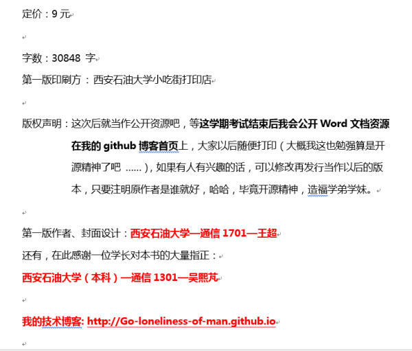
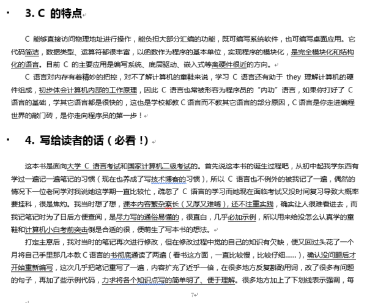
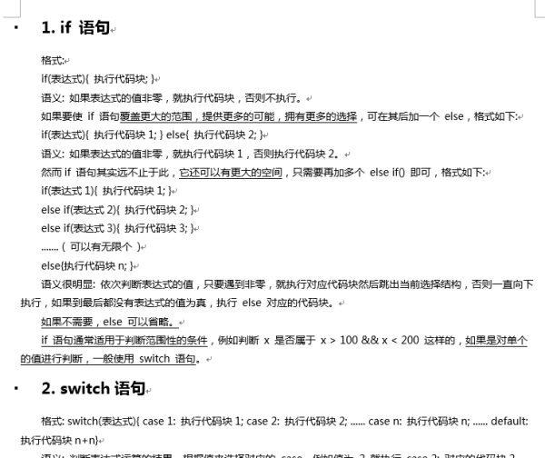
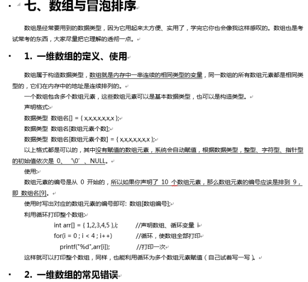
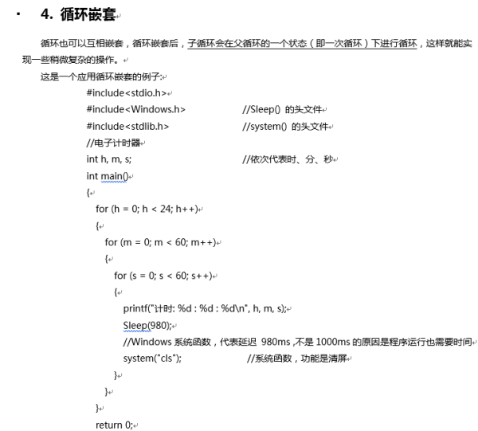
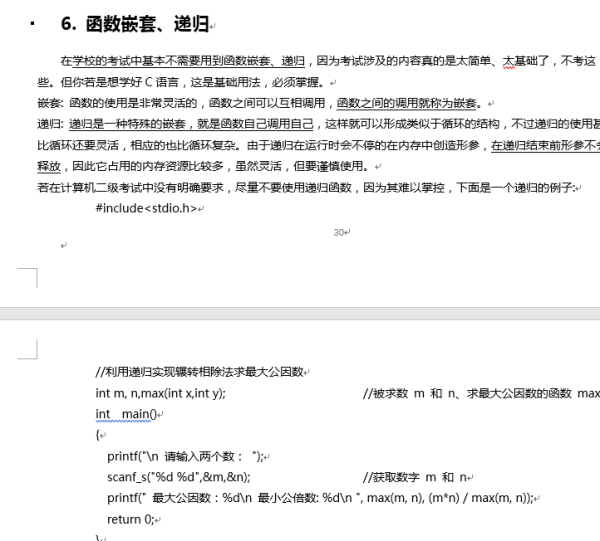
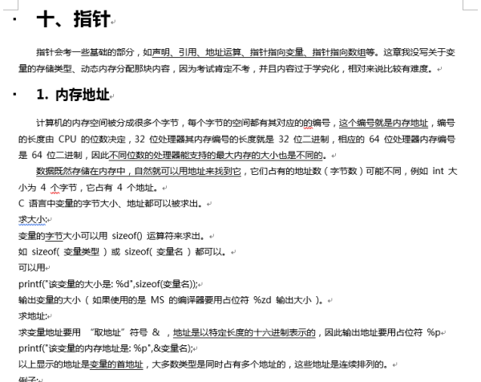
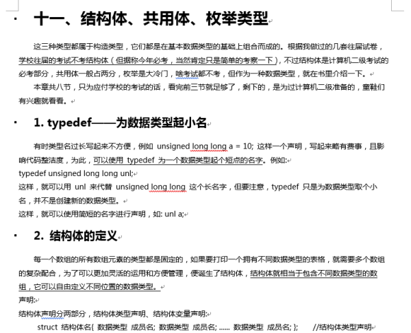
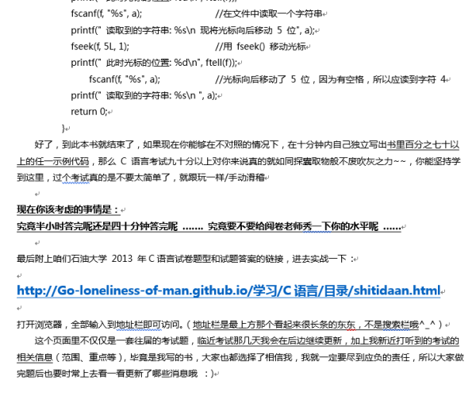

你是否还在为担心 C 语言挂科而发愁？还在为写不出程序而烦恼？还在为没有认真系统的学习过 C 语言基础语法而焦虑？
《面向考试编程》为你解决烦恼！经过三个月细心打磨，专注考试，注重实战！本书的特点是用尽可能通俗易懂、简洁明了的语言描述 C 语言基础知识，精心 为每个知识点都附上经典实例，并且严格控制篇幅，不写无用的废话，保证你能在两周内学完，最重要的是，书内还会告诉你哪些内容是 考试很少考到的，哪些内容是常考的重点，有的放矢，助你顺利突击考试！还在等什么，赶快拿起电话 ……
……好了，广告词到此结束，又俗又老套，可我实在是想不出啥好的推荐语了，毕竟我又不是干传媒的233……介绍下，鄙人比较热爱计算机领域的知识，平时喜欢 宅宿舍对着电脑打拉锯战，虽然目前在编程领域仍属菜鸡中的辣鸡级别，但做了几套往届试卷，发现自己的水平应付下学校的考试还是很绰绰有余的（半小时做 一套，96、94、98，嗯，挺好看的成绩，恍惚间觉得自己好像不是那么垃圾了）。前段时间花了大量心血专心致志的写了这本书，这本书是面向大学 C 语言考 试和国家计算机二级 C 语言考试的，在这里我可以很负责任的告诉你，只要学会这本书的百分之六十便足以让你的 C 语言不挂科，这本书的特点是篇幅短（ 共50页），易理解，可以很快学完，（本书是 24K纯原创，每个字都是我自己思考，亲手敲上去的，童叟无欺！），有兴趣的童鞋可以点开下边几张图片进一 步了解一下，是本书的一些片段。
em ...... 最后还有一件事，各位帅气的小哥哥和漂亮的小姐姐们如果愿意的话，帮忙给身边人推荐下这本书，因为做宣传真的是件好困难的事情啊！感激不 尽！感激涕零~(〃>▽<〃)/*
        